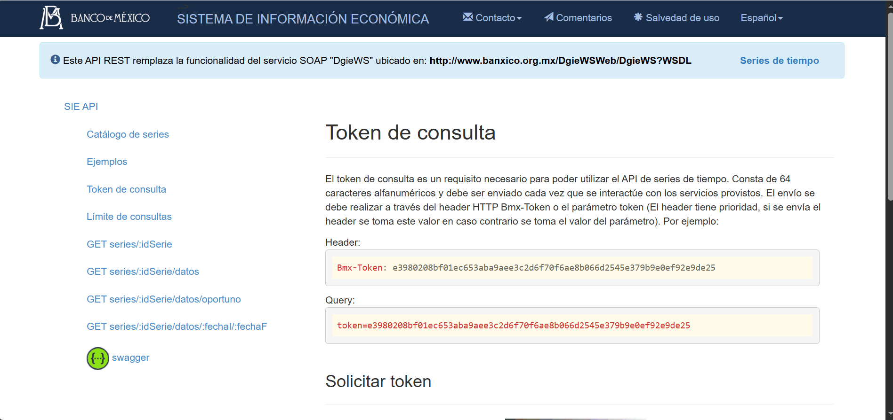
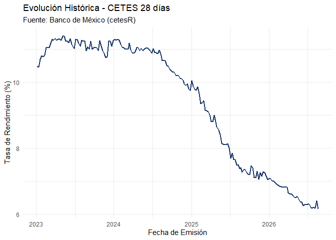
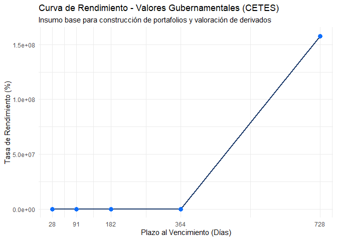

cetesR es un paquete de R diseñado para facilitar la extracción, procesamiento y análisis financiero de los valores gubernamentales de México (CETES, Bonos M y Udibonos). Obtiene información oficial directamente desde la API del Sistema de Información Económica (SIE) del Banco de México (Banxico) y la complementa con datos del mercado secundario.
Instalación
Puedes instalar la versión de desarrollo de cetesR directamente desde GitHub utilizando el paquete devtools:
if (!require("devtools")) {
install.packages("devtools")
}
devtools::install_github("abemorc/cetesR")Configuración de la API de Banxico (Token)
Para utilizar las funciones de consulta, es necesario contar con un token de la API de Banxico, el cual es gratuito y se puede obtener sin necesidad de registro en su portal
¿Cómo obtener tu token?
- Ingresa al portal oficial del .
- Ve a la parte de ‘Solicitar token’
- Introduce el captcha y presiona
Generar Token

Configuración en R
Una vez que tengas tu token, configúralo de forma segura utilizando la función set_banxico_token(). Si utilizas el argumento install = TRUE, el token se guardará en tu archivo .Renviron para que no tengas que escribirlo nunca más:
library(cetesR)
# Configuración permanente recomendada
set_banxico_token("TU_TOKEN_DE_BANXICO_AQUI", install = TRUE)(Nota: Si usaste install = TRUE, recuerda reiniciar tu sesión de R con Ctrl + Shift + F10 la primera vez).
Casos de Uso
El diseño de las funciones de cetesR, en particular el orquestador getBono, está pensado para ahorrar horas de limpieza de datos, entregando información lista para análisis cuantitativo:
- Integridad de Series de Tiempo: Al extraer los datos primarios, la función cruza y alinea automáticamente los plazos, montos asignados y tasas de rendimiento basándose en la fecha exacta de la subasta. Esto elimina los riesgos de desalineación, entregando insumos limpios que pueden inyectarse directamente en modelos de pronóstico temporal o evaluación de volatilidades.
-
Cálculo Automático de Redención: Por defecto, la API oficial no detalla cuándo vence un instrumento. El paquete calcula y anexa automáticamente la columna
Fecharedencion, un dato algorítmico esencial para estructurar flujos de efectivo, valuar instrumentos derivados o proyectar tablas de contingencia sin requerir cálculos manuales posteriores.
1. Consultar información integral de un instrumento (getBono)
La función principal del paquete consolida los datos históricos de plazos, montos asignados, tasas de rendimiento y la información del mercado secundario en una sola lista estructurada:
library(cetesR)
# Obtener toda la información histórica y reciente de CETES a 28 días
cetes_28 <- getBono(
bono = "cetes28",
fechaInicial = "2023-01-01",
fechaFinal = Sys.Date()
)
# Revisar los metadatos oficiales de la serie
head(cetes_28$Metadatos)
#> idSerie
#> 1 SF43936
#> titulo
#> 1 Valores gubernamentales Resultados de la subasta semanal Tasa de rendimiento Cetes a 28 días
#> fechaInicio fechaFin periodicidad cifra unidad versionada
#> 1 1982-09-02 2026-08-20 Diaria Porcentajes Porcentajes FALSE
# Consultar las primeras filas del data.frame consolidado de tasas y montos
head(cetes_28$cetes28_Datos)
#> Fecha_emision Plazo Monto_asignado Tasa_rendimiento Fecharedencion
#> 1 2023-01-05 28 15000 10.49 2023-02-02
#> 2 2023-01-12 28 15000 10.46 2023-02-09
#> 3 2023-01-19 28 12500 10.70 2023-02-16
#> 4 2023-01-26 28 12500 10.80 2023-02-23
#> 5 2023-02-02 28 12500 10.78 2023-03-02
#> 6 2023-02-09 28 12500 10.82 2023-03-092. Visualización rápida del rendimiento histórico
Gracias a que la estructura devuelta se integra de forma nativa con el tidyverse, puedes generar gráficos analíticos en cuestión de segundos utilizando ggplot2:
library(ggplot2)
# Gráfico de la evolución de la tasa de rendimiento de CETES 28 días
ggplot(cetes_28$cetes28_Datos, aes(x = Fecha_emision, y = Tasa_rendimiento)) +
geom_line(color = "#1b396a", linewidth = 0.8) +
labs(
title = "Evolución Histórica - CETES 28 días",
subtitle = "Fuente: Banco de México (cetesR)",
x = "Fecha de Emisión",
y = "Tasa de Rendimiento (%)"
) +
theme_minimal()
3. Modelado Cuantitativo: Curva de Rendimiento (Yield Curve)
La estructura temporal de las tasas de interés es un pilar para la valoración financiera y el modelado de riesgos. Al estar diseñado para integrarse con el ecosistema moderno de R, puedes iterar fácilmente sobre las funciones de cetesR para extraer las tasas actuales y construir la curva de rendimiento libre de riesgo en instantes:
library(cetesR)
library(dplyr)
#>
#> Adjuntando el paquete: 'dplyr'
#> The following objects are masked from 'package:stats':
#>
#> filter, lag
#> The following objects are masked from 'package:base':
#>
#> intersect, setdiff, setequal, union
library(purrr)
library(ggplot2)
# 1. Definir los códigos de Banxico para las tasas de CETES (28, 91, 182, 364 y 728 días)
# Se corrigió el código de 728 días por SF336711 (Tasa de rendimiento)
codigos_cetes <- c("SF43718", "SF43773", "SF43878", "SF43936", "SF336711")
plazos_dias <- c(28, 91, 182, 364, 728)
# 2. Extraer el último dato oportuno para cada plazo y unificar el nombre de la columna
curva_tasas <- map_dfr(codigos_cetes, function(codigo) {
df <- consultaApiDatoUltimo(codigo)
names(df)[2] <- "Tasa_rendimiento" # Estandarizamos el nombre para poder graficar
return(df)
}) |>
mutate(Plazo = plazos_dias)
# 3. Visualizar la estructura de la curva
ggplot(curva_tasas, aes(x = Plazo, y = Tasa_rendimiento)) +
geom_line(color = "#1b396a", linewidth = 1) +
geom_point(color = "#0d6efd", size = 3) +
scale_x_continuous(breaks = plazos_dias) +
labs(
title = "Curva de Rendimiento - Valores Gubernamentales (CETES)",
subtitle = "Insumo base para construcción de portafolios y valoración de derivados",
x = "Plazo al Vencimiento (Días)",
y = "Tasa de Rendimiento (%)"
) +
theme_minimal()
3. Consultas directas a la API (Series individuales)
Si solo requieres consultar una serie específica mediante su identificador oficial de Banxico:
# Obtener el último dato oportuno publicado para la tasa de CETES 28 (SF43718)
ultimo_dato <- consultaApiDatoUltimo(codigo = "SF43718")
print(ultimo_dato)
#> Fecha SF43718
#> 1 2026-08-20 16.9583